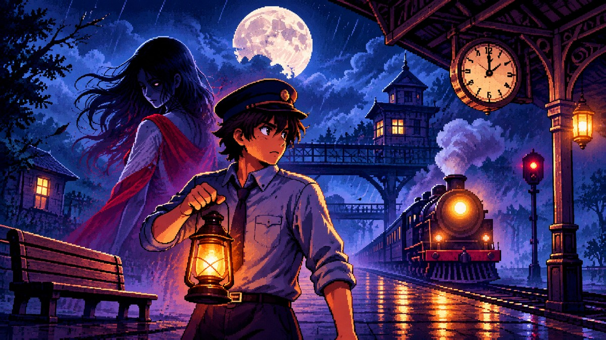
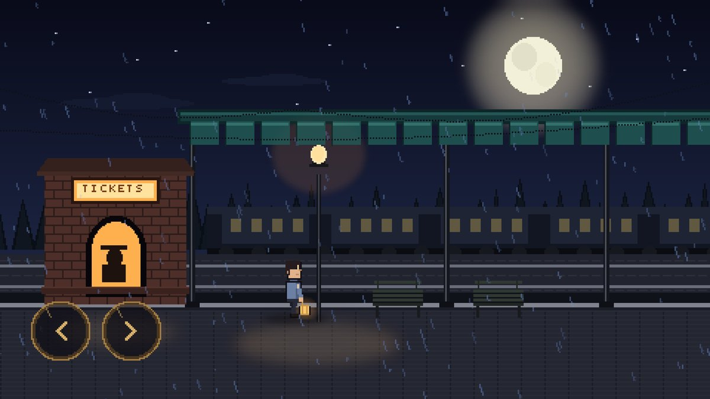
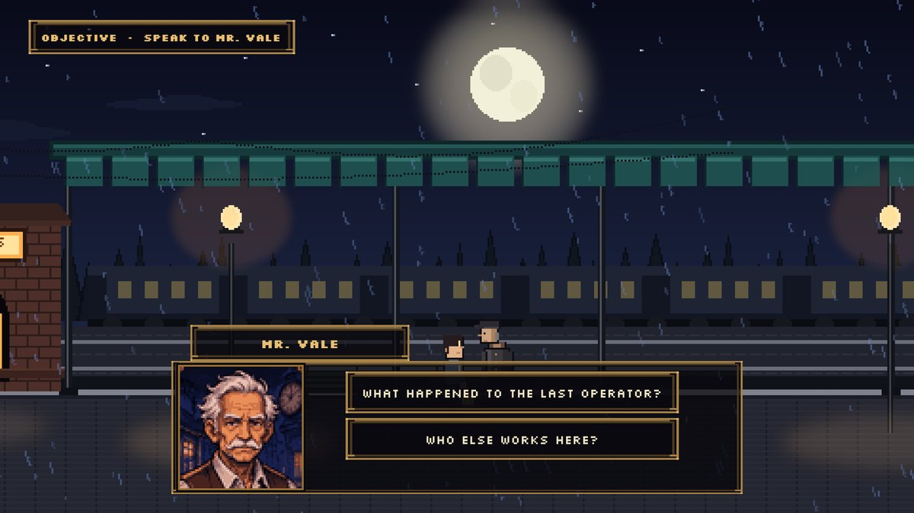
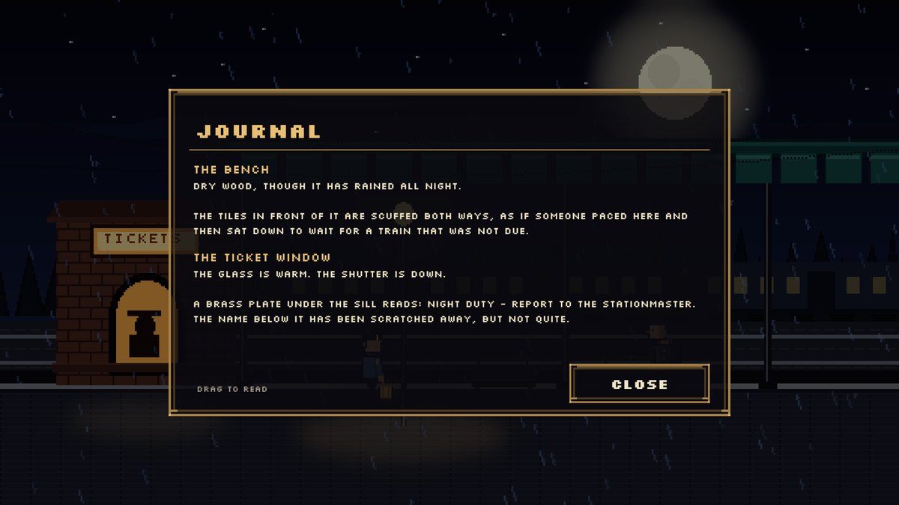
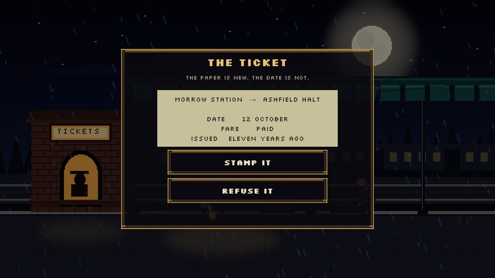
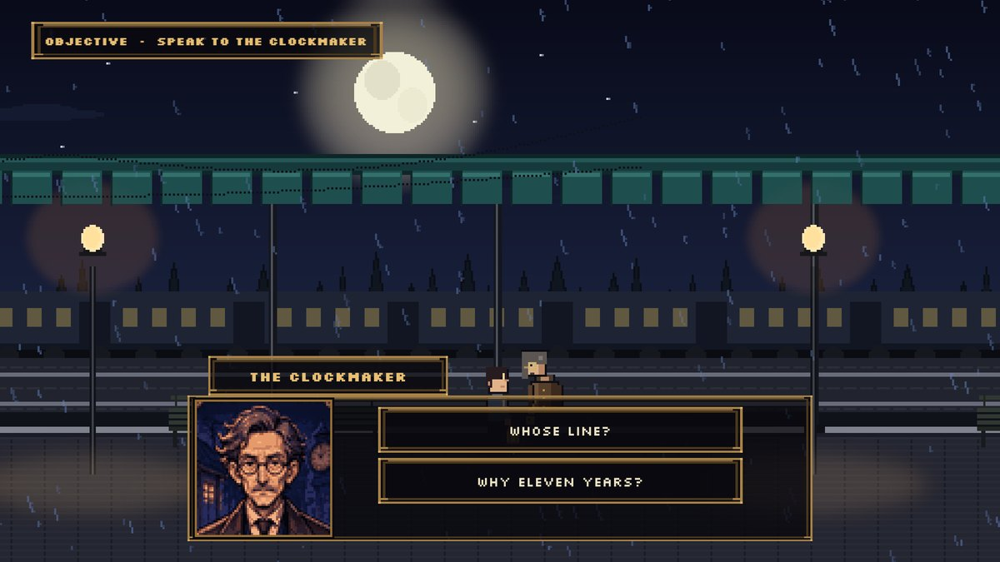
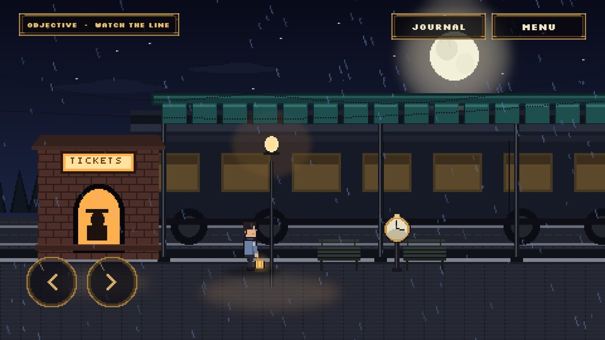

WORK THE ORDER
Each shift is a short list of tasks: the bench, Mr. Vale, the ticket window, the office. The current task is the only thing that answers, so the night stays clear.

IN DEVELOPMENTMorrow Station · Night Shift · Android
A side-scrolling pixel-art mystery at the end of a forgotten railway line. You are the new night operator. The instructions are four lines long. The 23:58 keeps coming back. Free with ads, or pay once to remove them and play offline.
DEV BUILD 0.3 · NOT YET ON GOOGLE PLAY
Spoiler-free: the job is ordinary. What the job leaves behind is not.
You are Sarito Ukashi, the new night operator at Morrow Station: a remote stop that the timetable still lists and almost nobody uses. The previous operator left abruptly, the replacement instructions are unusually brief, and the station log has gaps.
Your first shifts are made of small, ordinary tasks — walk the platform, read the noticeboard, take the tickets, write down what happened. A woman with a suitcase. A clockmaker who keeps the line's time. A destination that is not on any map. A carriage that passes with no engine.
Nothing attacks you. There are no puzzles made of sliding blocks and no timer counting down. You look, you talk, you decide, and the station writes it down.
Short sessions, small discoveries, and a journal that remembers more than you do.
Each shift is a short list of tasks: the bench, Mr. Vale, the ticket window, the office. The current task is the only thing that answers, so the night stays clear.
Every ticket leaves a decision. Stamp it or refuse it. The station remembers the answer, and so does the journal.
Inspect the bench, the window, the log, the archive. Each discovery writes itself down. There is no quest marker and no map — only what you noticed.
Passenger accounts contradict the archive. Files stop mid-sentence. Names have been scratched out, but not quite enough.
Drawn at 480×270 on a 25 pixel-per-metre grid and shown at 4×. Cold rain, warm lamps, flat colours and portraits cut from the same sheet.
Landscape, thumb-sized controls, tap to inspect. Saves at every step. Free with ads and a connection; the one-time Remove Ads purchase removes the ads and makes it playable offline.
Three are playable in the development build. Two are still being written. Nothing here is a store promise.
Learn the station, meet Mr. Vale, take the first passenger's ticket. One small detail does not add up.
PLAYABLE IN DEVA destination that is not on the map sends you into the archive, where the file for Ashfield Halt stops mid-sentence.
PLAYABLE IN DEVThe platform clock and the timetable disagree. Then something lit and empty goes past the platform with no engine.
PLAYABLE IN DEVThe passenger register and the archive tell different stories about the same people.
IN WRITINGThe 23:58 comes in. What you noticed, and what you decided, is what you have.
IN WRITINGFree play is supported by ads. One purchase takes the ads out, and the connection requirement with them.
No charge
Price shown in Google Play
The current development build has no ads and no purchase yet. This is the release model; there is no subscription. Read the purchase terms.
Captured in the desktop test player at 1920×1080. The game is played at 480×270 and scaled 4× on the phone.






The current build is tested in a desktop player. Earlier builds have run on an Infinix X6885 with Android 16; the latest build has not been tried on every device.
Release requirements. The current test build has no ads yet and runs offline.
No. The Last Platform is in development for Android and is not on Google Play. This page will carry the store link when there is one. Until then, the development builds are shared with testers directly.
A side-scrolling narrative mystery. You walk, inspect, talk and choose. It is not a platformer despite the name — the platform is the one at Morrow Station. There is no combat, no inventory management and no fail state that sends you back.
It is uneasy rather than frightening. No jump scares, no gore and no chase sequences. The dread comes from records that do not match, a clock that will not move and a train that arrives when it should not.
Yes, free to download and play with ads. A one-time Remove Ads purchase removes every ad and lets you play offline. There is no subscription; the price will be shown in Google Play. The current test build has no ads or purchase yet.
Free play needs an internet connection so the ads can load. With the one-time Remove Ads purchase, the game works offline. Your save itself is local either way: progress and settings stay on your phone, with a backup copy, and never leave the device. See the privacy policy.
Every ad removed for good, and the free version's internet requirement gone with them. Once the purchase is confirmed, the game works offline. It is one payment, tied to your Google Play account, and restores when you reinstall or change phones.
No account, and your save never leaves your phone. Free play uses Google AdMob for ads, which collects device and advertising information such as your advertising ID and IP address to deliver and measure them. The full detail is in the privacy policy.
Morrow Station is the last stop on a line that no longer appears on most maps. The platform is where the whole game happens: the bench, the ticket window, the clock, the archive, and the edge of the rails.
Join the Discord or email support@logicandgate.com. Tell us the phone, the shift and what you were doing; a screenshot helps more than anything.
Internal test builds, not store releases. Dates are the month the build was finished; NEXT is planned work, not a release.
Development notes, screenshots and test builds go to the studio Discord first. Bugs and questions can go there or to email.